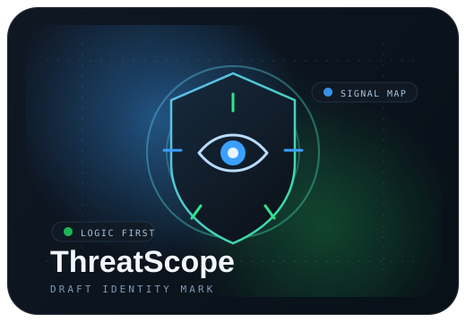

Module
0
STATUS //
CALIBRATING DETECTORS
Cybersecurity Analysis System
Rule-based threat analysis for logs, ports, and correlated exposure.
Tool Brief
Deterministic scoring
ThreatScope is a logic-first cybersecurity dashboard for reviewing logs, exposed services, and correlated indicators inside one operator view. It is built to present structured risk insight quickly while keeping the core reasoning deterministic and explainable.
ThreatScope converts raw telemetry into structured threat insights using deterministic detection rules, service mapping, and multi-condition reasoning. AI is available only as an optional explanation layer after the core analysis is complete.
Log Analyzer
Port Scanner
Correlation Engine
Draft Identity
replace later

Analysis Model
Logic
No AI dependency for scoring
3
Core modules
24/7
Operational framing
JSON
Structured API output
Structured Output
Threat Board
Awaiting telemetry.
Awaiting Run
0
Threat Level
No analysis yet
Run one or more modules to generate correlated findings.
Confidence
0%
Rules Fired
0
Open Ports
0
Failed Logins
0
Reasons
Why It Was Flagged
Actions
Suggested Response
Module
0
Port Scanner
Module
0
Correlation Trace
Optional Layer
Explanation Brief
AI remains optional. Generate a brief only after the rule engine completes a run.